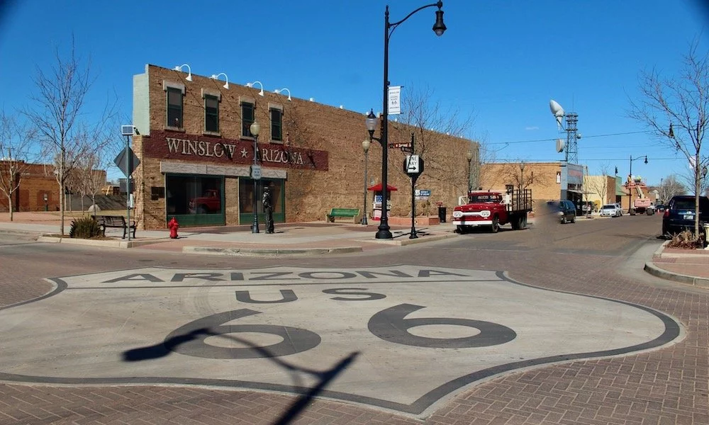

Keep Cool at These 6 Greater Phoenix Lakes
-
Lake Pleasant
-

Saguaro Lake
-
Canyon Lake
-
Apache Lake
-
Roosevelt Lake
Escape the desert heat and discover refreshing oases at these six scenic
lakes in Greater Phoenix. Whether you're looking for a peaceful day of
fishing, thrilling water sports, or a serene spot to picnic by the
shore, these lakes offer the perfect retreat. With sparkling waters
surrounded by rugged desert landscapes, you'll find yourself in the
perfect blend of adventure and relaxation. From the popular Saguaro Lake
to the tranquil Canyon Lake, there's something for every nature lover.
Pack your sunscreen and make a splash this summer—keeping cool has never
been this beautiful!
The top 25 hikes in Arizona
Arizona is a hiker's paradise, offering some of the most breathtaking
trails in the country. From the iconic red rocks of Sedona to the
majestic Grand Canyon, the top 25 hikes in Arizona promise unforgettable
adventures for all skill levels. Traverse rugged deserts, explore lush
forests, and uncover hidden waterfalls as you experience the diverse
beauty of the state. Whether you’re seeking a challenging trek like the
Havasu Falls hike or a family-friendly stroll along the Horton Creek
Trail, Arizona's trails will leave you in awe. Lace up your boots and
get ready to explore the best that the Grand Canyon State has to offer!
ARIZONA'S GHOST TOWN GETAWAYS
-
Gleeson (SE of Tucson, 16 miles east of Tombstone)
-
Gold King Mine and Ghost Town (29 miles west of Sedona)
-

Chloride (23 miles NW of Kingman and Route 66)
Step back in time with Arizona's ghost town getaways, where history and
adventure come together. Scattered across the desert, these
once-thriving mining towns now stand as fascinating relics of the Old
West. Wander through abandoned buildings, explore forgotten streets, and
imagine the stories of the past. From the famous Jerome with its artsy
vibe to the haunting ruins of Vulture City, each ghost town offers a
unique glimpse into Arizona’s rich history. Whether you're a history
buff or just looking for a one-of-a-kind escape, these ghost towns
provide an eerie yet captivating getaway experience.
BEST ROAD TRIP ROUTES IN ARIZONA
-

Arizona Route 66 Road Trip
-
Gold King Mine and Ghost Town (29 miles west of Sedona)
-
Chloride (23 miles NW of Kingman and Route 66)
-
Chloride (23 miles NW of Kingman and Route 66)
-
Chloride (23 miles NW of Kingman and Route 66)
Arizona offers a variety of epic road trip routes that showcase its
stunning landscapes, from red rock canyons to lush forests. Iconic
routes like Route 66 offer a nostalgic journey through small towns and
historic sites, while scenic drives like the Apache Trail provide
breathtaking views of desert lakes and rugged mountains. Whether you’re
exploring the Grand Canyon, Monument Valley, or the winding roads of
Sedona, Arizona's road trips promise unforgettable adventures. Discover
your perfect route and hit the road for an extraordinary journey through
the Southwest!
Arizona Wineries (Vineyards, Tastings, Tours and More)
Arizona's wine scene has blossomed into a vibrant industry, with over 30 wineries thriving across diverse landscapes. Southern Arizona’s high deserts, including regions like Sonoita and Willcox, produce award-winning wines thanks to climate conditions akin to California and Argentina. Central Arizona, particularly the Verde Valley, offers Mediterranean-like growing conditions, adding to the state's reputation for rich, flavorful wines. Whether visiting charming small towns or enjoying wines in major cities, Arizona's wine culture invites exploration and indulgence across various tasting rooms and wineries.
3 Best Ski Resorts in Arizona, 2023/24
-
ARIZONA SNOWBOWL
-
SUNRISE PARK
-
MOUNT LEMMON SKI VALLEY
Arizona may be known for its deserts, but it offers excellent skiing for all levels. The top ski resorts include Arizona Snowbowl, offering expert terrain with stunning mountain views; Sunrise Park, the state's largest ski area with family-friendly slopes; and Mount Lemmon Ski Valley, a unique experience where you can ski among pine trees with desert views. Whether you're looking for powder-filled runs or a cozy mountain lodge, Arizona's ski resorts provide memorable winter adventures.